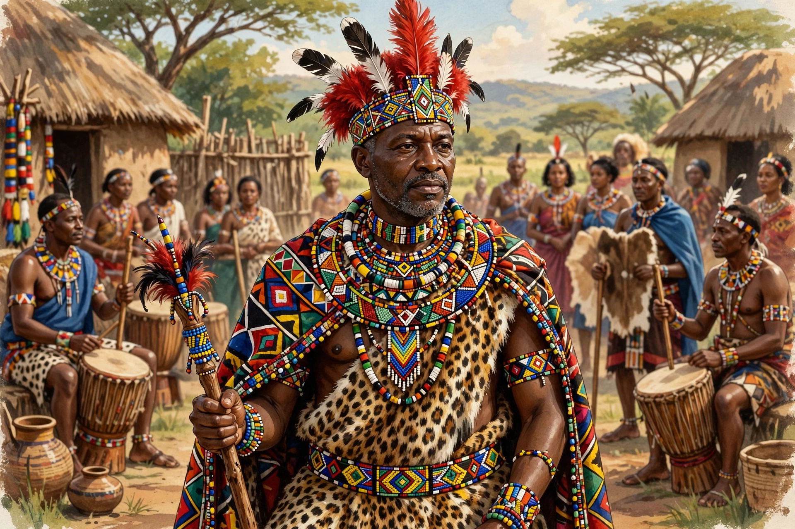

Mswati III
From Wikipedia, the free encyclopedia
| Mswati III | |
 | |
| Reign | 25 April 1986 – present |
|---|---|
| Coronation | 25 April 1986 |
| Born | 19 April 1968, Manzini, Swaziland |
| Predecessor | Sobhuza II (father) |
| House | Dlamini |
| Spouses | Numerous wives (polygamous) |
Mswati III (born Makhosetive Dlamini; 19 April 1968) is the King (Ngwenyama) of Eswatini and head of the Swazi royal family. He succeeded his father, King Sobhuza II, and was crowned on 25 April 1986, shortly after his eighteenth birthday, making him then one of the world's youngest reigning monarchs. He rules Africa's last absolute monarchy, governing alongside his mother, the Ndlovukazi (Queen Mother).
Reign
Educated partly in England at Sherborne School, Mswati III took the throne after a regency. Political parties remain banned under the tinkhundla system introduced by his father, and the king appoints the prime minister and much of the legislature. His reign has seen a new constitution (2005), continuing controversy over royal spending and his many wives chosen at the annual Umhlanga (Reed Dance), and pro-democracy protests in 2021 that were met with a security crackdown. In 2018 he renamed the country from Swaziland to Eswatini, "land of the Swazis." His government is based between Lobamba and the administrative capital, Mbabane.
See also: Mbabane, Southern Africa